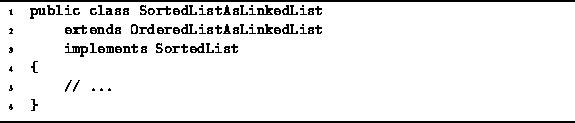

Data Structures and Algorithms
with Object-Oriented Design Patterns in Java
Data Structures and Algorithms
with Object-Oriented Design Patterns in Java
This section presents a linked-list implementation of sorted lists
that is derived from the OrderedListAsLinkedList
class given in Section  .
The SortedListAsLinkedList class
is introduced in Program .
The SortedListAsLinkedList extends the
OrderedListAsLinkedList class
introduced in Program
and it implements the SortedList interface
defined in Program .
.
The SortedListAsLinkedList class
is introduced in Program .
The SortedListAsLinkedList extends the
OrderedListAsLinkedList class
introduced in Program
and it implements the SortedList interface
defined in Program .

Program: SortedListAsLinkedList class.
There are no additional fields defined in the SortedListAsLinkedList class. The inherited fields are sufficient to implement a sorted list. In fact, the functionality inherited from the ListAsLinkedList class is almost sufficient--the only method of which the functionality must change is the insert operation.
 Copyright © 1998 by Bruno R. Preiss, P.Eng. All rights reserved.
Copyright © 1998 by Bruno R. Preiss, P.Eng. All rights reserved.